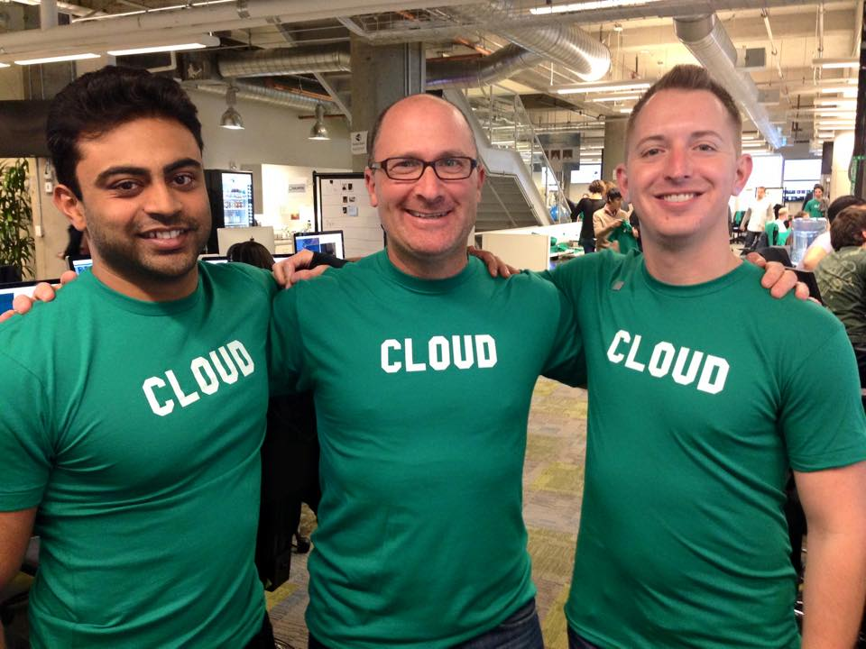

About agilemarkdown
agilemarkdown started as a way to keep a Pivotal-style backlog next to the code, in plain markdown, without depending on a hosted tool that might be shut down. Pivotal Tracker itself was sunset in 2025; the workflow was worth carrying forward.
I worked at Pivotal Software, not Pivotal Labs, and I count myself a latecomer to the Pivotal way. I had picked up most of these practices earlier at Engine Yard, the hosting provider for Pivotal's sites and for a lot of the SF Ruby community (GitHub, New Relic, Zendesk), where the same XP playbook was already in the air. If you were on the earlier Pivotal Labs team and I have something wrong in the tutorial, please send me a note.

The project is MIT-licensed. Source, issues, and releases are on GitHub.